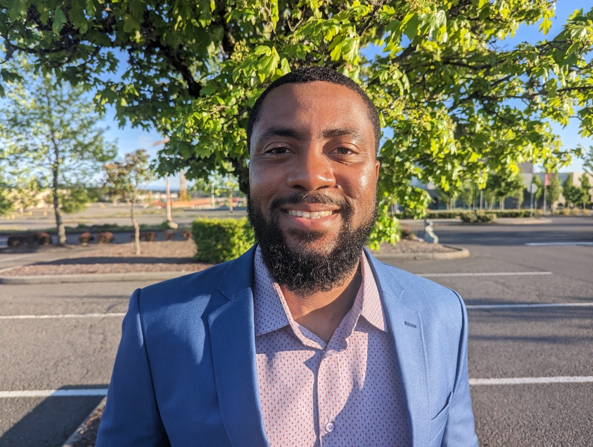

About Me
Odera works on versatile app deployment solutions in cloud and on-prem environments, and combines software engineering skills with deep expertise in high availability and server performance, application networking, and containerized workspaces like Docker and Kubernetes. He also has experience in virtualization of servers, Linux Administration, NGINX app deployment, and development using Python and systems programming in C
He has excellent communication skills from giving highly complex product demonstrations and presentations to both technical and non-technical audiences from his time at AWS and F5, technical prowess in web technologies, data processing, and finding the customer pain points for internal and external customers.